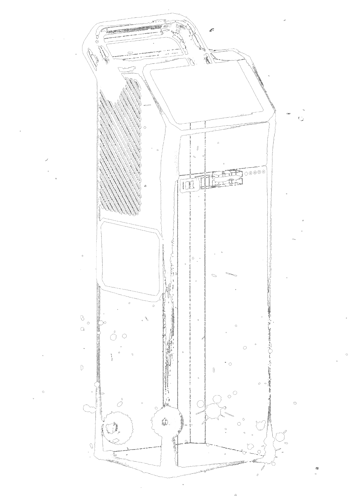
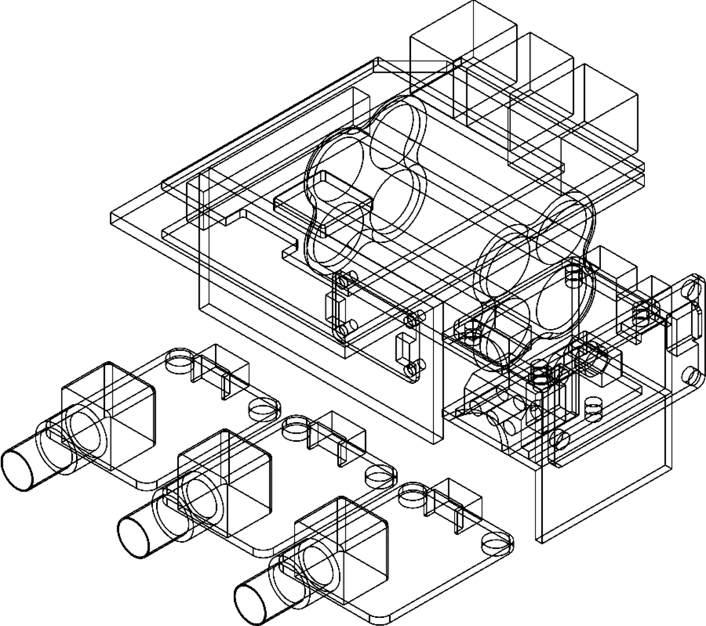

SPECTRIL
| Green | Red | Pro | |
|---|---|---|---|
| Laser | 532nm 120mW | 785nm 120mW | 785nm 500mW |
| Positioning | GPS | GPS / GNSS | GPS / GNSS / LTE |
| Sensors | Turbidity Temperature |
...TDS Conductivity |
...Remote Sensing (<5m) microscope pH Dissolved O2 |
| Purpose | Good for inorganics polymers microplastics halides cyanides/ammonia |
Surface-enhanced Raman spectroscopy |
Raman Imaging detector cooling Time-domain Raman (R-TDS) |
| Type | Cost-Effective & Widely Supported | Permanent Field Station Variant | Permanent Field Station Variant |
Looking inside
The heart of any Spectril device is a Raspberry Pi 5, equipped with an optical laser and a SonyIMX 708 sensor that helps identify several key water quality markers
Cost
$2500
Detection
Inorganics, polymers, microplastics, halides, cyanides/ammonia.
Sensor Suite
532nm green laser, turbidity, temperature, GPS

Spectril Green